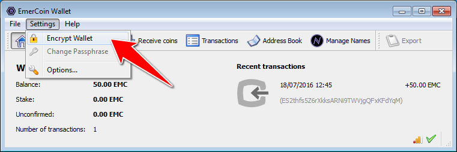
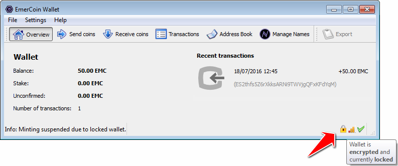
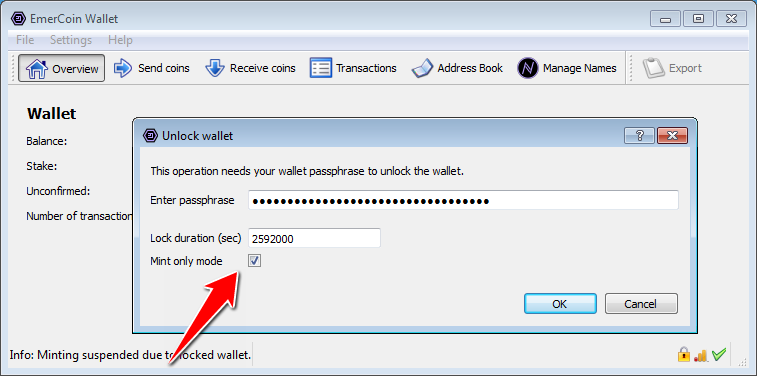
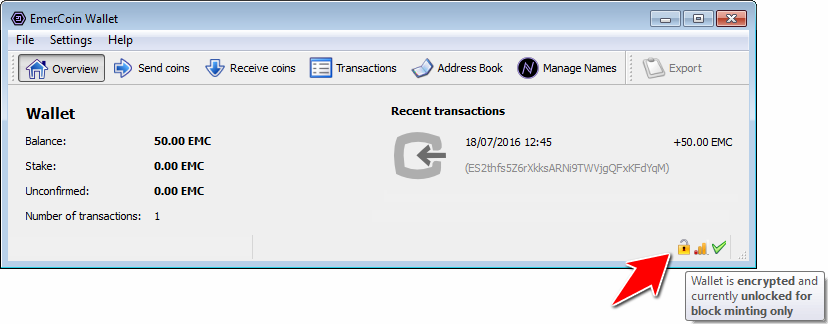
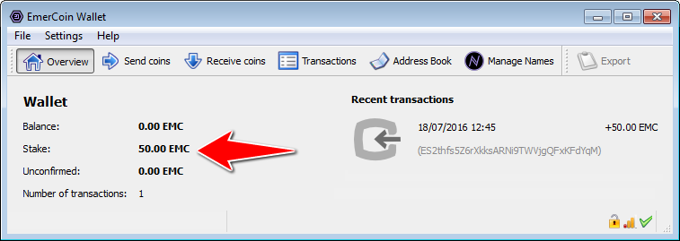

4. Mining
Как и в случае с любой другой криптовалютой, вы можете зарабатывать монеты, поддерживая сеть и создавая новые блоки. Это можно сделать либо путем объединенного майнинга с Биткоином, либо путем чеканки блоков в собственной цепочке блоков Emercoin.
В последнем случае вы получаете бонусы PoS в размере примерно 6% годовых от суммы ставки EMC.
4.1. Proof of Stake
Держа EMC в своем кошельке, вы можете помочь сети Emercoin проверять / транслировать транзакции, генерируя новые блоки с помощью системы Emercoin Proof-of-Stake(PoS).
Когда генерируются блоки PoS, кошелек, сгенерировавший блок, награждается дополнительным EMC. Заработок от PoS составляет ок. 6% в год. Процесс создания блоков с помощью Proof-of-Stake в общих чертах называется чеканкой .
Срок обращения монеты EMC составляет 30 дней. Это означает, что UTXO (неизрасходованный выход транзакции), добавивший EMC к вашему балансу, должен оставаться неизрасходованным в течение 30 дней, прежде чем он получит право на создание блока PoS.
Руководство по Proof-of-Stake
В этом руководстве рассказывается, как чеканить блоки Proof-of-Stake (PoS) с зашифрованным кошельком на вашем собственном компьютере с помощью графического интерфейса Emercoin . Обратите внимание, что также можно чеканить блоки PoS на автономном сервере с помощью демона Emercoin (см. Команду walletpassphrase ниже).
Прежде чем мы начнем, давайте разберемся с некоторыми вещами о PoS с Emercoin:
-
Блоки ЭМС добываются ок. каждые 10 минут.
-
Вероятность добычи блока с помощью PoS зависит от количества EMC, которое вы держите.
-
Монеты должны оставаться неизрасходованными на адресе EMC в течение 30 дней, чтобы получить право на участие в стейкинге.
-
Максимальный вес стейкинга (вероятность стейкинга) достигается через 90 дней .
-
Чтобы иметь возможность добыть блок с помощью PoS, кошелек должен быть разблокирован для добычи, как описано ниже.
-
При правильном размещении будет получено прибл. 6% годовых. Вознаграждение PoS за создание блока зависит от возраста монеты.
Выполните следующие действия, чтобы добывать блоки PoS с помощью графического интерфейса:
-
Зашифруйте свой кошелек:
Чтобы зашифровать свой кошелек, выберите «Зашифровать кошелек» в меню «Настройки» и выберите надежный пароль, который вы не забудете.
После того, как ваш кошелек будет зашифрован, в нижней части окна появится значок заблокированного замка.
 -
Разблокируйте свой кошелек в монетном дворе:
Щелкните значок замка в нижней части окна, установите флажок «Mint only» и введите свой пароль.
Когда кошелек разблокирован, значок замка в нижней части окна будет разблокирован.
Пока кошелек находится в режиме «Mint only», вы можете оставить его открытым, и никто не сможет отправить средства.
-
Оставьте свой кошелек разблокированным и работайте в режиме Mint-only:
У монет есть шанс сделать ставку только тогда, когда ваш кошелек открыт, и они остаются нетронутыми в адресе EMC в течение 30 дней.
Если вы создадите блок PoS, вы увидите изменение баланса вашей ставки на 32 блока, пока транзакция PoS не будет подтверждена.
 -
Когда монеты будут успешно размещены, вы увидите новую транзакцию и новые монеты, добавленные на ваш баланс.
Как часто запускать клиент для стекинга?
Вы можете разблокировать свой кошелек для майнинга на несколько дней каждый месяц, однако на практике маловероятно, что все UTXO ваших транзакций готовы к ставке одновременно. Поэтому в долгосрочной перспективе более целесообразно оставить кошелек работающим 24/7, чтобы увеличить ваши шансы на добычу блоков PoS и для поддержки сети Emercoin.
Проверка вашей статистики PoS
-
Калькулятор PoS доступен по адресу explorer.emercoin.com/poscal
-
Также доступна дополнительная статистика, относящаяся к вашему адресу EMC:
-
Посетите обозреватель блокчейнов Emercoin по адресу explorer.emercoin.com и найдите свой адрес (а) EMC, на который в настоящее время делается ставка.
-
Запустите инструмент калькулятора ставок для вашего адреса EMC на explorer.emercoin.com (нажмите фиолетовый значок «лист», и вы увидите результаты по вашему проценту чеканки, возрасту монеты и ряду других переменных).
-
Предотвращение стекинга вашего кошелька
Пока монеты ставятся, их нельзя будет потратить. Если вам нужно , чтобы предотвратить количество ЕМС от провешивания, просто набор reservebalance в вашем бумажнике в emercoin.conf файле. например:
reservebalance=1000
Чтобы вообще предотвратить стекинг в вашем кошельке, просто установите для резервного баланса значение больше, чем ваш общий баланс EMC.
Минтинг с помощью headless daemon
Если вместо графического интерфейса используется демон командной строки, то вы можете разблокировать свой кошелек для минтинга с помощью команды walletpassphrase:
walletpassphrase "passphrase" timeout [mintonly]
например, для разблокировки на чеканку на 604800 секунд (1 неделя):
$ emc walletpassphrase yourlongrandompassphrase 604800 true
Советы по поиску и устранению неисправностей
-
Проверьте ожидаемые вознаграждения PoS на explorer.emercoin.com/poscal.
-
Проверьте статистику чеканки вашего адреса EMC (см. Выше).
-
Убедитесь, что EMC UTXO оставался неизрасходованным в вашем кошельке не менее 30 дней.
-
Убедитесь , что вы не установили reservebalance в вашем бумажнике в emercoin.conf файле.
-
Так же см. частые вопросы Https://www.reddit.com/r/EmerCoin/comments/6xsmfw/pos_minting_question/